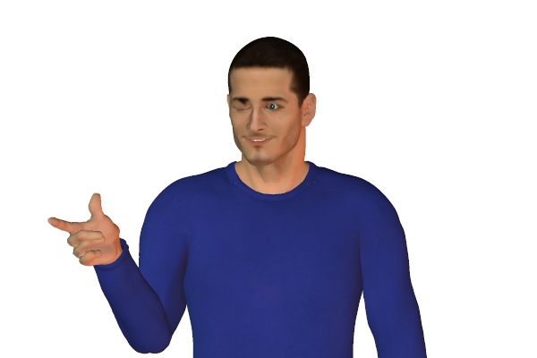
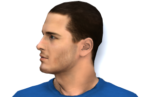

Bookmark added
-
finger point and winkacknowledgement or confirmationThis signal indicates a positive appreciation to whom it is gestured at as if to say 'You got it' or ' You understand it, well done'
-
person looking right (generally)creating, fabricating, guessing, lying, storytellingMaking things up and saying. This can also indicate lying. One may also look this way while storytelling to a child. Looking right and down indicates accessing feelings.
-
person looking left (generally)recalling, remembering, retrieving 'facts'Recalling and then stating facts from the memory. It often indicates telling the truth. Does not guarantee the facts from the memory are correct. A person may also look this way if he's talking to himself.
-
Person looking right and upvisual imagining, fabrication, lyingThe upward right-eye movement relates to imagination and thinking creatively. It can be a sign of fabrication if the person is trying to recall and state facts.
-
person looking right sidewaysimagining soundsSideways eye movements, Right (imagining) Left (recalling) indicate imagining or recalling sounds.
-
person looking right and down
 accessing feelingsIt can signal that the person is questioning him/herself about something.
accessing feelingsIt can signal that the person is questioning him/herself about something. -
person looking left and uprecalling images truthfulnessRelated to accessing information from memory rather than creating or imaginging it.
-
person looking left sidewaysrecalling or remembering soundsLooking left indicates recalling or remembering sounds. It can indicate remembering what was spoken by another person.
-
person looking left down
 self-talking, rationalizingIt indicates self-talk concerning an outward view rather than the inward feelings.
self-talking, rationalizingIt indicates self-talk concerning an outward view rather than the inward feelings. -
direct eye contact (when speaking)honesty - or faked honestyDirect eye contact is a sign of truthfulness. Practised liars can fake this.